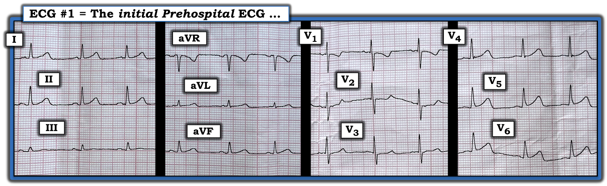
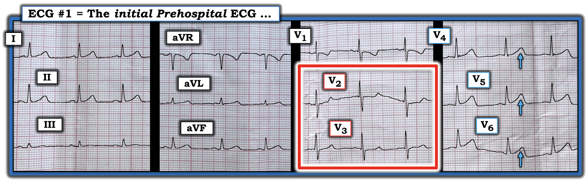
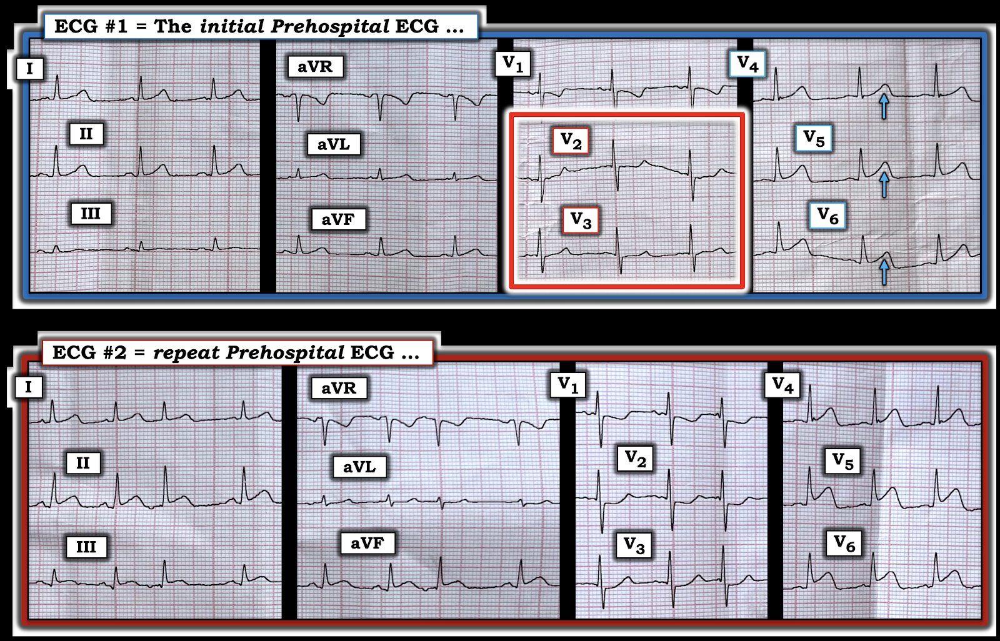
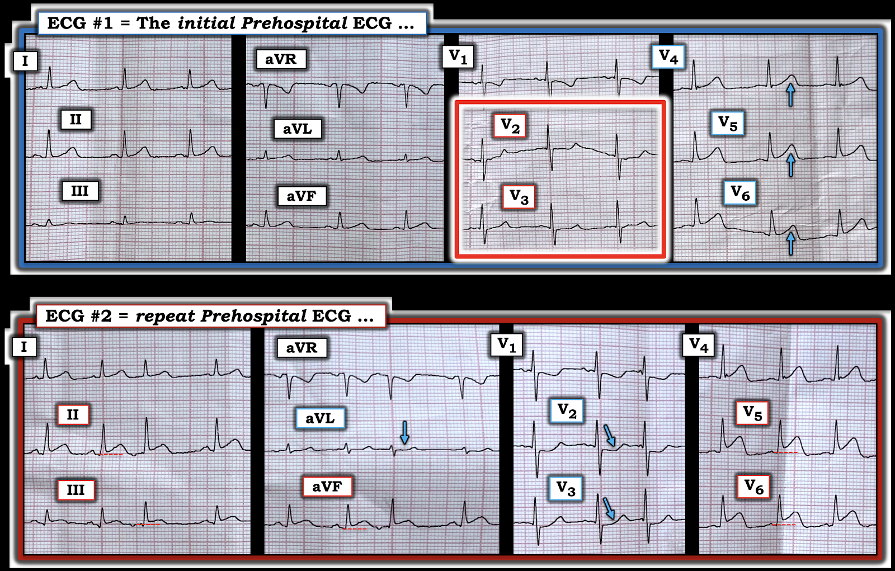

ECG Blog #438 — Một chẩn đoán của nhân viên cấp cứu ngoài viện ...
Điện tâm đồ ở Hình 1 được ghi ở một phụ nữ trung niên trước đó khỏe mạnh — bà bị đánh thức bởi cơn mới khởi phát CP (đau ngực — Chest Pain) đã bắt đầu ~3 giờ trước khi ghi điện tâm đồ này. Bệnh nhân ổn định huyết động — nhưng vẫn còn đau ngực vào thời điểm ghi điện tâm đồ #1.
- Bệnh nhân kể có 3 cơn đau ngực ngắn hơn vào ngày hôm trước.
CÂU HỎI:
- Với bệnh sử này — BẠN sẽ đọc điện tâm đồ này thế nào?
- Có nên kích hoạt phòng thông tim (cath lab)?


SUY NGHĨ CỦA TÔI về điện tâm đồ hôm nay:
Với bệnh sử nêu trên — điện tâm đồ ban đầu của ca hôm nay rõ ràng là đáng lo ngại. Nhịp xoang tần số 70-75/phút — các khoảng bình thường (PR,QRS, QTc) — trục bình thường — và không lớn buồng tim.
- "Mắt" tôi lập tức bị hút về chuyển đạo V2 và V3 (nằm trong hình chữ nhật ĐỎ ở Hình 2). Có vùng chuyển tiếp sớm ở các chuyển đạo ngực này (với sóng R cao đến bất ngờ ở chuyển đạo V1,V2 — và đến chuyển đạo V3 thì sóng R đã cao hơn độ sâu của sóng S).
- Đoạn ST ở chuyển đạo V2 và V3 thẳng đuỗn một cách không phù hợp (như ECG Blog này vẫn thường nhấn mạnh — bình thường ở các chuyển đạo này phải có ST chênh lên nhẹ, dốc lên thoai thoải).
- Tiếp tục với các chuyển đạo kế cận V4, V5 và V6 — sóng T ở các chuyển đạo này trông tối cấp (mũi tên XANH) — ở chỗ đoạn khởi đầu ST thẳng đuỗn, và các sóng T này lớn hơn dự kiến về kích thước với chân sóng rộng ra.
- ĐIỂM THEN CHỐT (PEARL) #1: Nếu chỉ xét riêng — hình dạng sóng T ở chuyển đạo V4 chưa hẳn đã trông bất thường. Tuy nhiên, trong bối cảnh các bất thường ST-T rõ ràng ở chuyển đạo V2,V3 — và hình dạng sóng T trông cấp tính hơn ở chuyển đạo V5 và V6 — tôi diễn giải sóng T ở chuyển đạo V4 là khởi đầu của biến đổi tối cấp này.
NHẬN ĐỊNH CỦA TÔI về điện tâm đồ #1:
Với bệnh sử đau ngực mới khởi phát ở người phụ nữ trung niên này — điện tâm đồ trước viện ban đầu ở Hình 2 gợi ý OMI thành sau đang bắt đầu và/hoặc đang diễn tiến trong ngày qua, kể từ khi bệnh nhân có triệu chứng.
- Với cơn đau ngực mới đánh thức bệnh nhân khỏi giấc ngủ chỉ 3 giờ trước đó (và hiện vẫn đang tiếp diễn) — cần phải kích hoạt phòng thông tim!
- ĐIỂM THEN CHỐT (PEARL) #2: Phải thừa nhận — các dấu hiệu trên điện tâm đồ ban đầu này là kín đáo. Nhưng bất thường có hiện diện ở từng chuyển đạo ngực ở bệnh nhân đau ngực mới này. Trong bối cảnh lâm sàng này — điện tâm đồ này đủ để chẩn đoán OMI thành sau cấp.
- Cần hiểu rằng lý do không thấy ST chênh xuống rõ ở chuyển đạo V2,V3 — và không thấy ST chênh lên ở chuyển đạo V4,V5,V6 — có thể là do diễn tiến lâm sàng đang tiếp diễn ở bệnh nhân này, với nhiều cơn đau ngực trong ngày qua (tức là, có thể đã có hiện tượng mạch "thủ phạm" tự mở ra rồi tắc lại trong khoảng thời gian này). Có thể điện tâm đồ ở Hình 2 thể hiện phần nào sự giả bình thường hóa của những thay đổi ST-T lẽ ra rõ hơn trên một điện tâm đồ trước đó.
- ĐIỂM THEN CHỐT (PEARL) #3: Ngoài tổn thương thành sau — sóng T tối cấp ở các chuyển đạo ngực bên gợi ý có OMI sau-bên cấp, và khi không có thay đổi rõ ở các chuyển đạo dưới — điều này hướng tới LCx (động mạch mũ trái — Left Circumflex) là động mạch "thủ phạm" nhiều khả năng nhất.
- ĐIỂM THEN CHỐT (PEARL) #4: Sóng R cao bất ngờ ở chuyển đạo V1,V2 củng cố mối lo ngại rằng có thể đã có nhồi máu thành sau hoàn tất (xem ECG Blog #354) — vì hình ảnh soi gương của sóng Q sâu dần (ở thành sau) chính là biên độ sóng R tăng dần ở các chuyển đạo trước. Sóng R cao bất ngờ ở các chuyển đạo trước đặc biệt có khả năng báo hiệu nhồi máu thành sau hoàn tất NẾU dấu hiệu này là mới so với các điện tâm đồ trước đó.


===========================
CA BỆNH TIẾP DIỄN:
Đội cấp cứu trước viện đã ghi các điện tâm đồ liên tiếp. Hình 3 so sánh một trong các điện tâm đồ ghi lại này — với điện tâm đồ trước viện ban đầu (thời điểm ghi 2 bản ghi này cách nhau ~30 phút).
- BẠN rút ra được ĐIỀU GÌ từ điện tâm đồ ghi lại ở Hình 3?


===========================
Những gì rút ra từ Điện tâm đồ Ghi lại:
NẾU sau khi xem điện tâm đồ #1 vẫn còn bất kỳ nghi ngờ nào về việc cần kích hoạt phòng thông tim ngay — thì nghi ngờ đó phải được xóa bỏ bởi những thay đổi ST-T "động" thấy rõ ở hầu như tất cả các chuyển đạo trên điện tâm đồ ghi lại.
- ĐIỂM THEN CHỐT (PEARL) #5: Cách TỐT NHẤT để so sánh một điện tâm đồ liên tiếp với một điện tâm đồ khác — là đặt hai bản ghi cạnh nhau — rồi đi lần lượt từng chuyển đạo, luôn so sánh vùng của một chuyển đạo với vùng chuyển đạo tương ứng trên điện tâm đồ thứ 2.
- Thế nhưng — các bác sĩ lâm sàng lại rất hay bỏ qua điểm quan trọng về quy trình này. Thay vào đó, xu hướng là cố "tiết kiệm thời gian" bằng cách xem toàn bộ 1 bản ghi — rồi xem toàn bộ bản ghi thứ 2 mà không dành thời gian so sánh trực tiếp vùng của từng chuyển đạo với vùng chuyển đạo tương ứng trên bản ghi thứ 2. Thực tế là trừ khi bạn so sánh 2 bản ghi bằng cách đi lần lượt từng chuyển đạo — sẽ rất dễ bỏ sót những dấu hiệu kín đáo nhưng quan trọng.
- Đồng thời — cũng cần bảo đảm rằng việc so sánh từng chuyển đạo của chúng ta là "so táo với táo, chứ không phải với cam". Ý tôi là — chúng ta muốn bảo đảm rằng mọi thay đổi về hình dạng ST-T không phải là hệ quả của sự dịch chuyển đáng kể trục mặt phẳng trán hoặc do thay đổi vị trí đặt điện cực chuyển đạo ngực.
Áp dụng kỹ thuật so sánh này
vào Hình 4:
Mặc dù có dịch chuyển nhẹ trục mặt phẳng trán (từ khoảng +40 độ ở điện tâm đồ #1 — sang +60 độ ở điện tâm đồ #2) — thay đổi nhỏ này khó có thể làm thay đổi đánh giá của chúng ta khi so sánh hình dạng ST-T ở các chuyển đạo chi. Hình dạng QRS ở các chuyển đạo ngực về cơ bản giống nhau trên cả hai bản ghi. Do đó — mọi thay đổi ST-T mà chúng ta ghi nhận giữa 2 điện tâm đồ này nhiều khả năng là "thật".
- Ở các chuyển đạo chi của điện tâm đồ #2 — giờ đây có ST chênh lên kín đáo-nhưng-có-thật ở từng chuyển đạo dưới (khi so với đường nền chấm chấm màu ĐỎ ở mỗi chuyển đạo này).
- ST-T ở các chuyển đạo dưới này có hình dạng cấp tính hơn so với trên điện tâm đồ #1 (tức là, đoạn khởi đầu ST chênh lên thẳng đuỗn hơn) — và có thể chúng ta đang thấy khởi đầu của các sóng Q nhỏ ở chuyển đạo dưới.
- Mũi tên XANH ở chuyển đạo aVL — làm nổi bật đoạn ST thẳng đuỗn vốn không có trên điện tâm đồ #1. Tôi diễn giải đây là thay đổi soi gương (reciprocal) với ST chênh lên mới xuất hiện ở các chuyển đạo dưới.
Ở các chuyển đạo ngực:
- Mũi tên XANH ở chuyển đạo V2 và V3 — làm nổi bật mức ST chênh xuống tăng lên.
- Ở chuyển đạo V5 và V6 — chắc chắn không còn nghi ngờ gì rằng hình dạng trông cấp tính hơn, với đoạn khởi đầu ST thẳng đuỗn và ST chênh lên nhiều hơn (khi so với các đường chấm chấm màu ĐỎ ở các chuyển đạo này).
NHẬN ĐỊNH CỦA TÔI về điện tâm đồ #2: Ở bệnh nhân vẫn đang đau ngực này — điện tâm đồ ghi lại ở Hình 4 xác nhận các thay đổi ST-T "động".
- Có chỉ định thông tim ngay! — ở bệnh nhân có triệu chứng này với OMI dưới-sau-bên cấp đang diễn tiến.


DIỄN TIẾN CỦA CA BỆNH:
- Các giá trị troponin liên tiếp tăng rất cao.
- Thông tim cho thấy thân chung động mạch vành trái và các nhánh LAD bình thường — và một RCA nhỏ nhưng không tắc nghẽn. Thân chính của LCx (động mạch mũ trái — Left Circumflex) có một tổn thương 50% ở đoạn giữa mạch này — kèm hẹp nặng ở đoạn gần của nhánh bờ tù thứ 1 (1st Obtuse Marginal) của LCx, được xem là động mạch "thủ phạm". Nong mạch vành đã được thực hiện thành công.
==================================
Lời cảm ơn: Xin cảm ơn Konstantin Тихонов (Moscow, Nga) đã chia sẻ ca bệnh và bản ghi này.
==================================
Các bài ECG Blog liên quan đến ca hôm nay:
- ECG Blog #205 — Ôn lại Cách tiếp cận hệ thống của tôi khi đọc điện tâm đồ 12 chuyển đạo.
- ECG Blog #193 — Ôn lại những điều cơ bản để dự đoán động mạch "thủ phạm" (đồng thời bàn vì sao thuật ngữ "STEMI" — nên được thay bằng "OMI" = nhồi máu cơ tim do tắc cấp động mạch vành (acute coronary Occlusion MI)).
=================================
- BẤM VÀO ĐÂY — để xem 6 Video điện tâm đồ mới của tôi (về đọc nhịp — đọc điện tâm đồ 12 chuyển đạo kèm các ca lâm sàng về chẩn đoán điện tâm đồ OMI cấp).
- BẤM VÀO ĐÂY — để nghe 2 Podcast điện tâm đồ mới của tôi (về các sai sót khi đọc điện tâm đồ & nhịp — và — các sai sót khi đánh giá OMI cấp).
=================================
- Nhận biết sóng T tối cấp — các nhóm chuyển đạo — một OMI (dù không phải STEMI) — xem Bình luận của tôi ở cuối trang trong bài đăng ngày 8 tháng 11 năm 2020 trên Dr. Smith's ECG Blog.
- Nhận biết các dấu hiệu điện tâm đồ của xoáy trước tim (Precordial Swirl) (do OMI cấp các nhánh xuyên vách của LAD) — xem Bình luận của tôi ở cuối trang trong bài đăng ngày 22 tháng 3 năm 2024 trên Dr. Smith's ECG Blog.
- ECG Blog #294 — Ôn lại cách nhận biết LIỆU động mạch "thủ phạm" đã được tái tưới máu hay chưa.
- ECG Blog #230 — Ôn lại cách so sánh các điện tâm đồ liên tiếp.
- ECG Blog #115 — Cho thấy thay đổi ST-T có thể diễn ra ngoạn mục chỉ trong vòng 8 phút.
- ECG Blog #268 — Cho thấy một ví dụ về sóng T tái tưới máu.
- ECG Blog #400 — Ôn lại khái niệm thay đổi ST-T "động".
- ECG Blog #337 — Một ca "NSTEMI" mà thực ra là OMI đang diễn tiến với thời gian khởi phát không rõ (biểu hiện bằng sóng T tái tưới máu ở các chuyển đạo dưới).